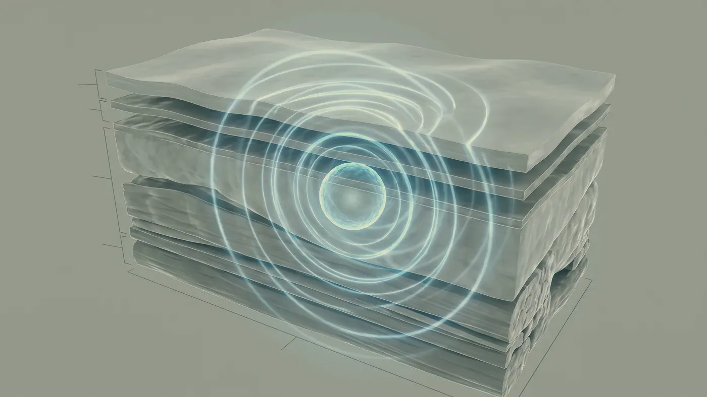

Şikâyet rehberi · Hacim ve sarkma
Düşen yüz, çoğu zaman desteğini yitirmiş bir yüzdür
Yaş ilerledikçe yüz iskeleti küçülür, yağ bölmeleri incelir ya da aşağı kayar, dokuları yerinde tutan bağlar gevşer. Aynada gördüğünüz yorgunluk bu değişimlerin bileşkesidir. Plan, hangi katmanın önde olduğuna göre değiştiği için ilk iş katmanları birbirinden ayırmaktır.
Fark nerede
Yüzün hangi katmanları zamanla değişir?
Yüzü katlı bir yapı gibi düşünebilirsiniz: en altta kemik, üstünde bağlar ve kaslar, onun üstünde yağ bölmeleri, en dışta deri. Yaşla birlikte bu katmanların hepsi farklı hızda değişir. Bu yüzden çoğu kişi tek bir çizgiden değil, yüzünün bütün olarak aşağı indiğinden yakınır.
Kemik iskelet
Yüz kemikleri de zamanla yeniden biçimlenir. Göz çukurunun kenarları genişler, elmacık kemiğinin öne çıkıklığı azalır, alt çenenin açısı belirginliğini yitirir. Temel küçüldükçe üzerine oturan dokular daha az desteklenir.
Yağ bölmeleri
Yüzdeki yağ tek bir tabaka değil, ince zarlarla ayrılmış bölmelerdir ve bu bölmeler aynı hızla değişmez. Bazıları erir, bazıları aşağı doğru yer değiştirir; sonuçta yüzün üst kısmı boşalırken alt kısmı daha dolgun görünebilir. Kısa sürede çok kilo vermek bu değişimi belirgin biçimde hızlandırır.
Tutucu bağlar
Derin katmanları kemiğe sabitleyen bağlar zamanla esnekliğini kaybeder. Bağın zayıfladığı yerde doku aşağı iner, güçlü kaldığı yerde sabit durur; oluklar ve çöküntüler bu iki bölgenin buluştuğu hatlarda belirir. Yani sarkma yalnızca yer çekiminin işi değil, azalan destekle süren ağırlığın ortak sonucudur.
Deri
Deri içindeki kolajen yapımı genç erişkinlikten sonra her yıl biraz azalır ve deri incelir. İnce deri, alttaki hacim değişikliklerini gizleyemez; tersine onları daha görünür kılar. Güneş, destek liflerini doğrudan yıprattığı için dış etkenlerin başında gelir; sigara ise dokunun beslenmesini azaltır.
Işığın yüzdeki dağılımı
Bir yüzün dinç ya da yorgun algılanması büyük ölçüde ışığın nereye düştüğüne bağlıdır. Dolgun ve öne bakan alanlar ışığı geri yansıtır, çöken alanlar gölgede kalır. Hacim azaldıkça gölgeli alanlar büyür ve belirgin bir kırışıklık olmasa da yüzde yorgunluk izlenimi oluşur. Planlamada çoğu zaman bu dengenin yeniden kurulması amaçlanır.
Muayenedeki ilk soru, bu yüzde azalanın dolgunluk mu yoksa gerginlik mi olduğudur. Şakakta çukurlaşma, göz çevresinde derinleşme ve elmacıkta düzleşme öndeyse hacim kaybı ağır basar. Hacim yerinde durduğu hâlde dokunun aşağı indiği, çene hattının netliğini yitirdiği yüzlerde ise gevşeme öne çıkar.
Pratikte çoğu yüz ikisinin karışımıdır ve genellikle önce destek noktaları ele alınır. Boşalmış bir bölgeyi sıkılaştırmak boşluğu gidermez; gevşemiş dokuya fazla hacim eklemek ise ağırlığı artırıp görünümü daha aşağı çekebilir.
Cerrahi olmayan yöntemler fazla deriyi almaz ve cerrahinin yerini tutmaz; belirgin deri fazlalığında bu durum açıkça söylenir (neden bazı işlemleri yapmıyoruz). Yüzünüz bütün hâlinde, hem otururken hem ayaktayken, karşıdan ve profilden incelenir; kilo geçmişiniz, güneş alışkanlıklarınız ve ilaçlarınız hekim muayenesi sırasında sorulur.
Kısa süre içinde yüzün bir yarısında düşme, mimik kaybı, ağız köşesinde sarkma ya da konuşma zorluğu fark ederseniz bu estetik bir konu değildir. Vakit kaybetmeden 112’yi arayın ya da size en yakın acil servise gidin.
Buradan sonrası
Öne çıkan katman belli olunca hangi seçenekler konuşulur?
Aşağıdakiler genel bir çerçeve sunar; hangisinin size uygun olduğu ve etkinin ne kadar süreceği muayenede belirlenir. Çene hattındaki bulanıklık her zaman sarkmadan kaynaklanmaz; bazen çene altındaki sınırlı yağ birikiminden gelir ve bu ayrım çene ve jawline değerlendirmesinde yapılır.
HIFU (ameliyatsız yüz germe)
SIKILAŞMAMuayenede belirlenir→Sıvı yüz germe
HACİMMuayenede belirlenir→Biyostimülan uygulamalar
DOKUMuayenede belirlenir→Altın iğne radyofrekans
SIKILAŞMAMuayenede belirlenir→
HIFU (ameliyatsız yüz germe)
Gevşemenin önde olduğu yüzlerde odaklanmış ultrasonla derin destek katmanında sıkılaşma hedeflenir; cerrahinin yerini tutmaz.
Sayfasına git →Sık gelen sorular
Merak ettiğiniz soruya dokunun, yanıtı burada açılsın
Bir adım ötesi
Yüzünüzde hangi katmanın değiştiğini birlikte görelim
Muayenede yüzünüzün tamamı değerlendirilir; önceliğin hacimde mi yoksa destekte mi olduğu size açıkça anlatılır.
Metni hazırlayan ve tıbbi açıdan gözden geçiren: Uzm. Dr. Rahmi Cebeci (Aile Hekimliği Uzmanı · Medikal Estetik Sertifikalı).
Buradaki anlatım herkese yöneliktir; size özel bir teşhis ya da tedavi planı sunmaz, muayenenin yerini tutmaz. Her uygulamanın etkisi kişiye göre farklı olur.